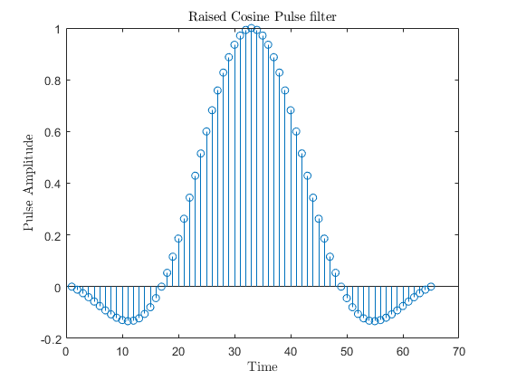
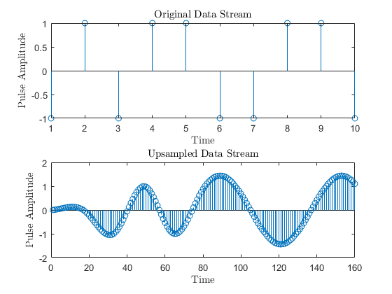
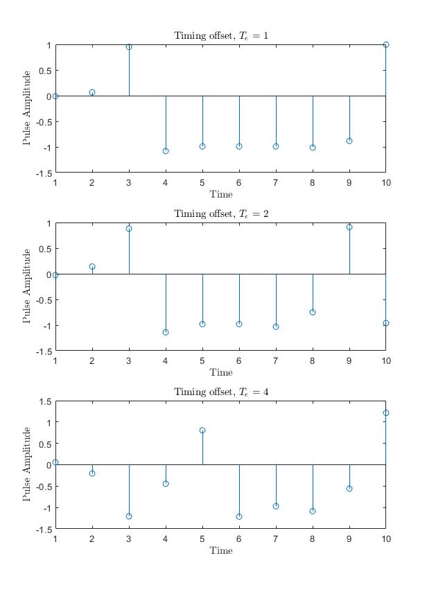
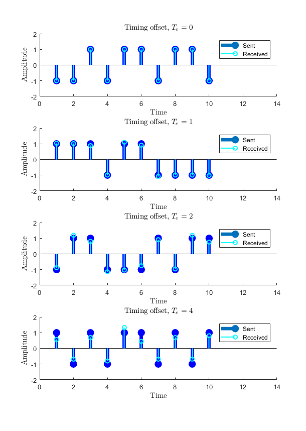
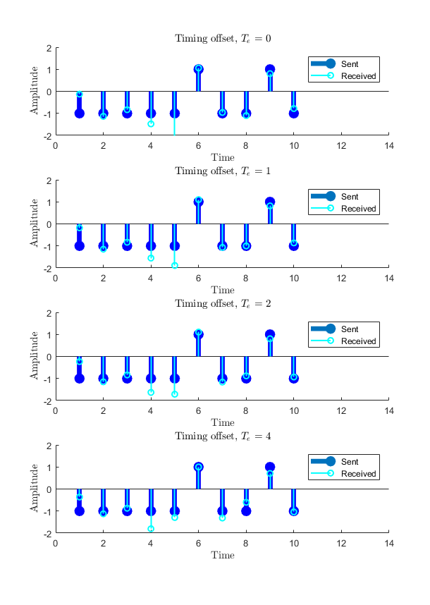
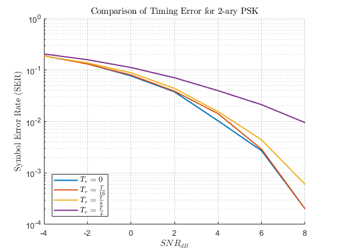
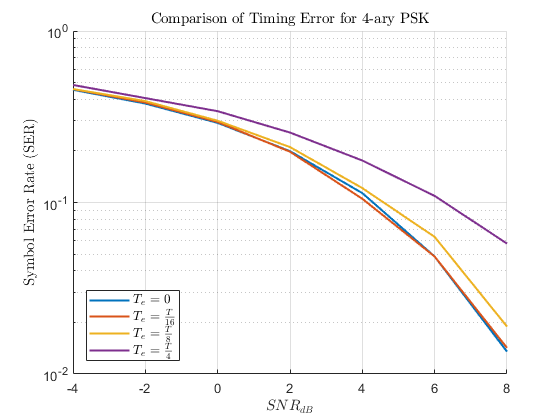
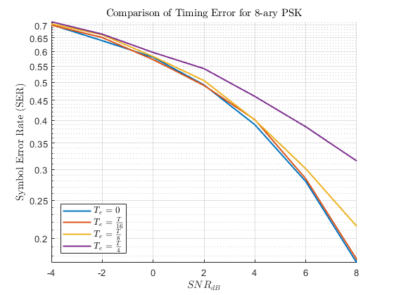

Contents
% David Dobbie : 300340161 % ECEN 310 / ENGR 440 Communications Engineering % Lab 1 - Bit Error Rate clear all; clc; set(0, 'defaulttextInterpreter','latex') %%Q3: % how timing offset impacts the SER performance N = 10; s = zeros(N,1); n = zeros(N,1); r = zeros(N,1); sest = zeros(N,1); Es = 1;
a) generate raised cosine pulse
The raised cosine pulse lies from 0 to 64 since it is not possible to implement a non-causal filter. This will lead an offset in symbols that need to be accounted for.
b =0.5; D = 2; Rs = 16; T = 1; SNRdB_axis = 0:5:15; M =2; constel = exp((j * 2* pi * (0:M-1))/ (M)); rc = rcosfir(b,D,Rs,T); rc_axis = -D*Rs:D*Rs; figure(1) stem(rc); title('Raised Cosine Pulse filter') xlabel('Time') ylabel('Pulse Amplitude')
b)
figure(2) rng(6); s = real(randsrc(N,1,constel)); % get rnd symbols, tx n = 0; r = s + n; % rx x = upsample(s,Rs); % simulate filter sampled at Ts = T/Rs y = filter(rc,1,x); %pass upsampled data through raised cosine filter subplot(2,1,2) stem(y); title('Upsampled Data Stream') xlabel('Time') ylabel('Pulse Amplitude') subplot(2,1,1) stem(s); title('Original Data Stream') xlabel('Time') ylabel('Pulse Amplitude')
c) Sampling the filtered data
This demonstrates the sampling of filtered data through a raised cosine pulse. There is no noise in this initialisation.
Te_axis = [1 2 4]; %timing error figure(3) for indx = 1:length(Te_axis) Te = Te_axis(indx); % timing error s = real(randsrc(N,1,constel)); % get rnd symbols, tx n = 0; x = upsample(s,Rs); % simulate filter sampled at Ts = T/Rs y = filter(rc,1,x); %pass upsampled data through raised cosine filter z = downsample(y,Rs,Te_axis(indx)); % the receiver, no noise subplot(3,1,indx) stem(z); title(['Timing offset, $ T_e$ = ' num2str(Te)]) xlabel('Time') ylabel('Pulse Amplitude') end
d)e) add D extra symbols and remove D at end
This is done to align the sent bits with their corresponding mapped received bits. This allows for analysis of it.
Ns = N + D; Te_axis = [0 1 2 4]; %timing error figure(4) for indx = 1:length(Te_axis) Te = Te_axis(indx); % timing error s = real(randsrc(Ns,1,constel)); % get rnd symbols, tx n = 0; x = upsample(s,Rs); % simulate filter sampled at Ts = T/Rs s_ups = filter(rc,1,x); %pass upsampled data through raised cosine filter s_ups=s_ups; r = downsample(s_ups+n,Rs,Te); % received section r = r(1+D:end); % strip D bits at start s = s(1:end-D); % strip D bits at end subplot(4,1,indx) hold on stem(s, 'filled', 'linewidth', 5, 'Color', 'blue'); stem(r, 'linewidth', 1.5, 'Color', 'cyan'); hold off ylim([-2 2]); xlim([0 14]); title(['Timing offset, $ T_e$ = ' num2str(Te)]) xlabel('Time') ylabel('Amplitude') leg = legend('Sent','Received'); end
f) add AWGN noise to the simulation
AWGN is added to the signal. It is not complex here as there is only one dimension to set the decision points. We see in comparison to the previous figure that noise has come into effect on the system.
Ns = N + D; Es = 1; SNRdB = 5; Te_axis = [0 1 2 4]; %timing error figure(5) for indx = 1:length(Te_axis) No = Es/db2pow(SNRdB); rng(6); Te = Te_axis(indx); % timing error n = sqrt(No/2)*randn(Ns,1); % noise samples s = real(randsrc(Ns,1,constel)); % get rnd symbols, tx s_tx = s + n; x = upsample(s_tx,Rs); % simulate filter sampled at Ts = T/Rs s_ups = filter(rc,1,x); %pass upsampled data through raised cosine filter r = downsample(s_ups,Rs,Te); % received section r = r(1+D:end); % strip D bits at start s = s(1:end-D); % strip D bits at end subplot(4,1,indx) hold on stem(s, 'filled', 'linewidth', 5, 'Color', 'blue'); stem(r, 'linewidth', 1.5, 'Color', 'cyan'); hold off ylim([-2 2]); xlim([0 14]); title(['Timing offset, $ T_e$ = ' num2str(Te)]) xlabel('Time') ylabel('Amplitude') leg = legend('Sent','Received'); end
g,h)
We see that larger timing errors lead to larger symbol error rates.
SNRdBAxis = -4:2:8; TeAxis = [0 1 2 4]; SERresults = zeros(length(SNRdBAxis), length(TeAxis)); M_Axis = [2 4 8]; Ns = 1e4; % loop through and test different M-ary schemes for M_indx = 1:length(M_Axis) M = M_Axis(M_indx); for p = 1:length(SNRdBAxis) for q = 1:length(TeAxis) SNRdB_val = SNRdBAxis(p); Te = TeAxis(q); SERresults(p,q) = getSER(M, Ns, SNRdB_val, Te, Rs, D, rc); end end % plotting system figure(5 + M_indx); hold on grid on ax = gca; semilogy(SNRdBAxis ,SERresults,'linewidth', 1.5) ax.ColorOrderIndex = 1; set(ax,'yscale','log') hold off xlabel("$ SNR_{dB} $") ylabel("Symbol Error Rate (SER)") str = sprintf('Comparison of Timing Error for %c-ary PSK', (num2str(M))); title(str); lgnd = legend('$T_e = 0$','$T_e = \frac{T}{16}$','$T_e = \frac{T}{8}$', ... '$T_e = \frac{T}{4}$'); lgnd.Location = 'southwest'; set(lgnd,'FontSize',10) set(lgnd,'Interpreter','latex') end % Functions: % get SER function % Inputs: M - number of decision points; Ns - number of data points % simulated; SNRdB - SNRdB being tested; phaseError for phase error % introduced % Outputs: SER % get SER function % Inputs: M - number of decision points; Ns - number of data points % simulated; SNRdB - SNRdB being tested; Te - timing error causing ISI; % Rs - symbol rate % Outputs: SER function SER = getSER(M, N, SNRdB, Te, Rs, D, rc); constel = exp((j * 2* pi * (0:M-1))/ (M)); Ns = N + D; Es = 1; No = Es/db2pow(SNRdB); s = randsrc(Ns,1,constel); % get rnd symbols, tx n = sqrt(No/2)*complex(randn(Ns,1),randn(Ns,1)); % noise samples % simulating timing error s_tx = s + n; x = upsample(s_tx,Rs); % simulate filter sampled at Ts = T/Rs s_ups = filter(rc,1,x); %pass upsampled data through raised cosine filter r = downsample(s_ups,Rs,Te); % received section r = r(1+D:end); % strip D bits at start s = s(1:end-D); % strip D bits at end sest = zeros(N,1); for indx = 1:N %returns decision point closest to the received message [dmin, const_indx] = min(abs(r(indx) - constel)); sest(indx) = constel(const_indx); end SER = (nnz(s-sest)/N); end  